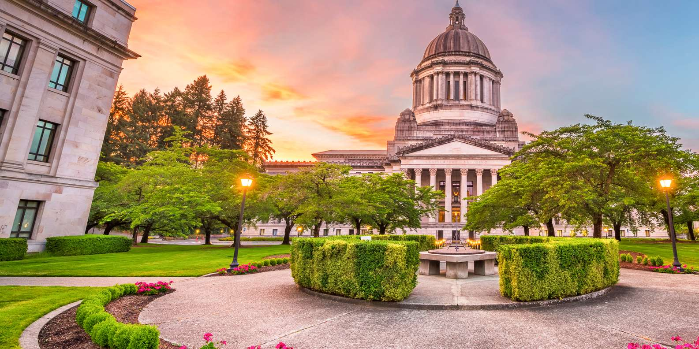

Explore Olympia
Olympia, Washington's capital, has a great mix of history and natural beauty. You can check out the beautiful waterfront, walk through the Capitol Campus, or visit the State Capitol building. The city also has a cool arts scene and plenty of local shops to explore. Whether you're into outdoor activities or trying local food, Olympia offers a laid-back vibe with lots to see and do.
Interesting Facts
| Year | Fact |
|---|---|
| 1850 | Founding of Olympia |
| 1853 | Olympia became the capitol of Washington State |
| 1889 | Olympia became the state capitol |